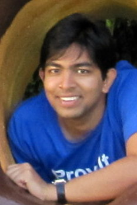

|  | Sameer Agarwal, Graduate Student Operating Systems and Networking Group |
I am a final year PhD student working with Prof. Ion Stoica and Prof. Sam Madden on BlinkDB, a database that guarantees sub-second query latencies on unbounded data by trading-off on the accuracy of results. In the recent past, I have also actively collaborated with Dr. Srikanth Kandula at Microsoft Research, Redmond on RoPE (Re-Optimizer for Parallel Execution). RoPE optimizes parallel executions by leveraging a variety of runtime/intermediate data statistics and has been successfully deployed on production clusters at Microsoft Bing. I completed my undergraduate education from the Department of Computer Science and Engineering at the Indian Institute of Technology, Guwahati in 2009 and was awarded the prestigious President of India Gold Medal.
I was supported by the Qualcomm Innovation Fellowship during 2012-13 and am supported by the Facebook Graduate Fellowship during 2013-14.
Ph.D., Computer Science, University of California, Berkeley, Fall 2009 - Continuing
M.S., Computer Science, University of California, Berkeley, Spring 2012
B.Tech. Computer Science and Engineering, Indian Institute of Technology, Guwahati, Spring 2009
Sameer Agarwal, Henry Milner, Ariel Kleiner, Ameet Talwalkar, Michael Jordan, Samuel Madden, Barzan Mozafari, Ion Stoica. Knowing When You're Wrong: Building Fast and Reliable Approximate Query Processing Systems. ACM SIGMOD 2014, Snowbird, Utah.
Ariel Kleiner, Ameet Talwalkar, Sameer Agarwal, Ion Stoica, Michael Jordan. A General Bootstrap Performance Diagnostic. ACM KDD 2013, Chicago, Illinois.
Sameer Agarwal, Barzan Mozafari, Aurojit Panda, Henry Milner, Samuel Madden, Ion Stoica. BlinkDB: Queries with Bounded Errors and Bounded Response Times on Very Large Data. ACM EuroSys 2013, Prague, Czech Republic (Best Paper Award). Download Official Release (0.1).
Sameer Agarwal, Aurojit Panda, Barzan Mozafari, Anand P. Iyer, Samuel Madden, Ion Stoica. Blink and It’s Done: Interactive Queries on Very Large Data (Demonstration Paper). VLDB 2012, Istanbul, Turkey.
Sameer Agarwal, Srikanth Kandula, Nicolas Bruno, Ming-Chuan Wu, Ion Stoica, Jingren Zhou. Re-optimizing Data Parallel Computing. USENIX NSDI 2012, San Jose, California.
Sameer Agarwal, Aurojit Panda, Barzan Mozafari, Samuel Madden, Ion Stoica. BlinkDB: Queries with Bounded Errors and Bounded Response Times on Very Large Data (Extended Abstract). USENIX NSDI 2012, San Jose, California.
Nicolas Bruno, Sameer Agarwal, Srikanth Kandula, Bing Shi, Ming-Chuan Wu, Jingren Zhou. Recurring Job Optimization in Scope. ACM SIGMOD 2012, Scottsdale, Arizona.
Ganesh Ananthanarayanan, Sameer Agarwal, Srikanth Kandula, Albert Greenberg, Ion Stoica. Duke Harlan, Ed Harris. Scarlett: Coping with Skewed Content Popularity in MapReduce Clusters. ACM EuroSys 2011, Salzburg, Austria.
Sameer Agarwal, Mosharaf Chowdhury, Dilip Joseph, Ion Stoica. Lattice: A Scalable Layer-Agnostic Packet Classification Framework, UC Berkeley Technical Report UCB/EECS-2011-96, Aug. 2011.
Sameer Agarwal, Dhruba Borthakur, Ion Stoica. Snapshots in the Hadoop Distributed File System. UC Berkeley Technical Report UCB/EECS Mar. 2011.
BlinkDB: Fast Approximate Results over Big Data. GITPRO World Conference, Palo Alto, CA, USA. April 12th, 2014.
Querying Petabytes of Data in Seconds. Pivotal Inc., Palo Alto, CA, USA. Mar 10th, 2014.
Querying Petabytes of Data in Seconds. Oracle Inc., Redwood City, CA, USA. Feb 24th, 2014.
Querying Petabytes of Data in Seconds. O'Reilly Strata 2014, Santa Clara, CA, USA. Feb 13th, 2014.
Approximating Queries with User Defined Functions. AMPLab Retreat, Lake Tahoe, CA, USA, Jan 6th, 2014.
Deep Dive into BlinkDB: Querying Petabytes of Data in Seconds using Sampling. Spark Summit 2013, San Francisco, CA, USA. Dec 2nd, 2013.
BlinkDB: Approximate Queries on Very Large Data. O'Reilly Strata NY, New York City, NY, USA. Oct 28th, 2013.
BlinkDB: Approximate Queries on Very Large Data. Yahoo Inc.. Sunnyvale, CA, USA. Oct 16th, 2013.
BlinkDB: Approximate Queries on Very Large Data. Apple Inc.. Cupertino, CA, USA. Oct 15th, 2013.
BlinkDB: Approximate Queries on Very Large Data. Qualcomm Inc.. San Diego, CA, USA. Sep 25th, 2013.
Introduction to using BlinkDB. AMP Camp 3. Berkeley, CA, USA. August 30th, 2013.
BlinkDB: Queries with Bounded Errors and Bounded Response Times on Very Large Data. IBM Research. Yorktown Heights, NY USA, July 29th, 2013.
BlinkDB and the Berkeley Data Analytics Stack. DARPA XDATA, Washington D.C, USA. July 11th, 2013.
BlinkDB: Queries with Bounded Errors and Bounded Response Times on Very Large Data. Symantec Research, Mountain View, CA, USA. June 11th, 2013.
BlinkDB: Queries with Bounded Errors and Bounded Response Times on Very Large Data. ACM EuroSys, Prague, Czech Republic. April 15th, 2013.
Approximate Queries on Very Large Data (Mid-term Fellowship Presentation). Qualcomm Research, Santa Clara, CA, USA. April 12th, 2013.
Approximating User-Defined Functions in BlinkDB. AMPLab Retreat, Lake Tahoe, CA, USA. Jan 15th, 2013.
BlinkDB: Queries with Bounded Errors and Bounded Response Times on Very Large Data. Intel Research, Santa Clara, CA, USA. November 20th, 2012.
BlinkDB: Queries with Bounded Errors and Bounded Response Times on Very Large Data. LinkedIn, Mountain View, CA, USA. September 21st, 2012.
BlinkDB: Queries with Bounded Errors and Bounded Response Times on Very Large Data. HP Labs, Palo Alto, CA, USA. July 25th, 2012. HP Blog.
BlinkDB: Queries with Bounded Errors and Bounded Response Times on Very Large Data. Twitter Inc., San Francisco, CA, USA. July 20th, 2012.
BlinkDB: Queries with Bounded Errors and Bounded Response Times on Very Large Data. AMPLab Retreat, Santa Cruz, CA, USA. May 17th, 2012.
BlinkDB: Queries with Bounded Errors and Bounded Response Times on Very Large Data. Qualcomm Research, San Diego, CA, USA. May 1st, 2012.
Re-optimizing Data Parallel Computing. USENIX NSDI, San Jose, CA, USA. April 27th, 2012.
QuicksilverDB: Interactive Queries on Very Large Data. AMPLab Retreat, Lake Tahoe, CA, USA. Jan 11th, 2012.
The Data in the Datacenter. Microsoft Research, Redmond, WA, USA. August 11th, 2011.
Analyzing the Network Health of Google's Datacenters. Google Inc., Mountain View, CA, USA. August 16th, 2010.
Fall 2010, EE 122: Introduction to Communication Networks with Prof. Scott Shenker
Fall 2013, EE 122: Introduction to Communication Networks with Prof. Sylvia Ratnasamy
My Erdos Number is 3 (me -> Albert G. Greenberg -> Janos Komlos -> Paul Erdos).
My younger brother studies Computer Science at the Indian Institute of Technology, Kharagpur.
I ran the 2012 San Francisco Half Marathon in 2:20:16 for AID Berkeley.